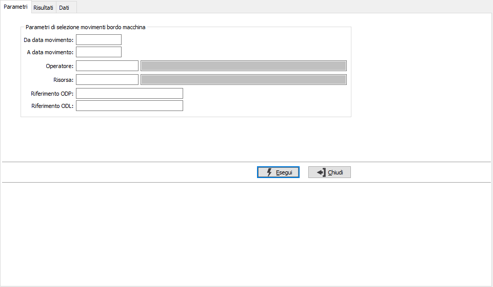
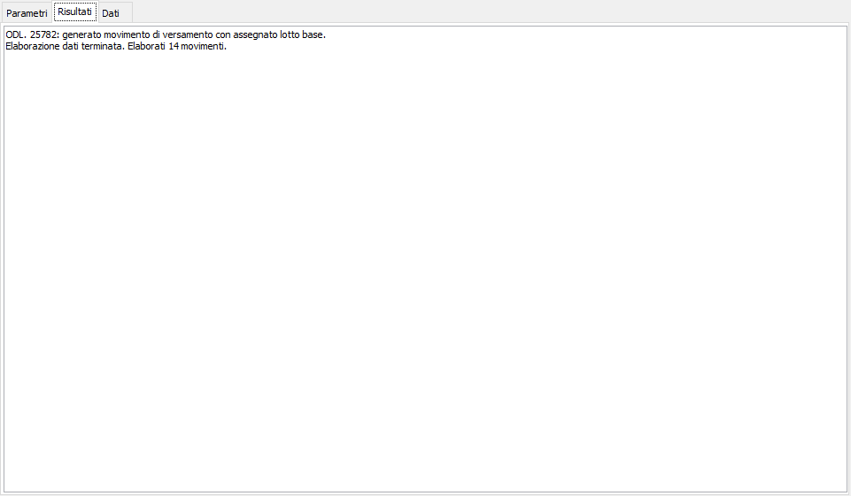
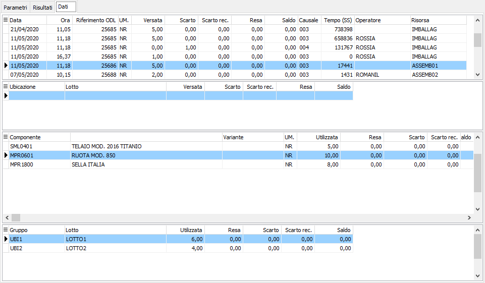

Controllo versamenti da registrare
Come già descritto in Introduzione la generazione dei versamenti derivanti dai movimenti bordo macchina e dei relativi movimenti di magazzino può essere eseguita automaticamente dal sistema (schedulando nelle operazioni pianificate di sistema il richiamo di un apposita applicazione) oppure lanciata manualmente dall’operatore.
Nel secondo caso prima di procedere alla generazione è possibile effettuare un controllo dei dati che saranno elaborati; la procedura consente la selezione dei movimenti bordo macchina da elaborare per data, operatore, risorsa, riferimento ODP e ODL, in modo da poter controllare dettagliatamente quali e quanti versamenti sarebbero generati dall'utilizzo dei suddetti parametri.

Nella pagina risultati vengono visualizzati i vari messaggi di avviso o di errore e l'esito dell'elaborazione.

Nella pagina Dati vengono visualizzati i versamenti elaborati dalla simulazione e che saranno generati dall'effettiva Registrazione versamenti: per ogni movimento bordo macchina elaborato saranno generati tanti movimenti di versamento quante sono le quantità valorizzate sul movimento: un movimento di versamento per la quantità versata, uno per lo scarto, uno per lo scarto recuperabile, uno per reso non lavorato ed uno per il saldo. Ogni versamento presente nella griglia in alto ha collegati i suoi componenti, entrambi con gli eventuali dettagli per lotti ed ubicazioni se gestiti.
